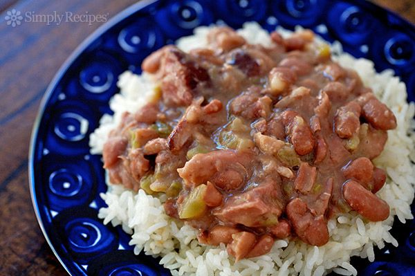

Red Beans and Rice

Red Beans and Rice is a staple of southern food and can quickly and easily become a staple of your household in less than 30 minutes. The recipe originated from Budget Bytes but I have included my own twist on it.
Ingredients
- 1 lb. dry red beans
- 2 Tbsp cooking oil
- 12 oz. Andouille sausage
- 1 yellow onion
- 1 green bell pepper
- 3 ribs celery
- 6 cloves garlic
- 2 tsp smoked paprika
- 1 tsp dried oregano
- 1 tsp dried thyme
- 1 tbsp cayenne pepper
- 1 tsp black pepper
- 2 bay leaves
- 6 cups water
- 1/4 cup chopped parsley
- 1 tbsp salt, or to taste
- 1.5 cups long grain white rice (uncooked)
- 3 green onions
Instructions
- The night before, add the dry beans to a large bowl with double their volume in water. Allow the beans to soak in the refrigerator overnight.
- When you're ready to start cooking, slice the sausage into rounds. Add the cooking oil and sliced sausage to a large pot and cook over medium until the sausage pieces are browned. Remove the cooked sausage with a slotted spoon to a clean bowl. Place the cooked sausage in the refrigerator while you prepare the rest of the dish.
- While the sausage is cooking, dice the onion, bell pepper, and celery. Mince the garlic.
- After removing the cooked sausage, add the onion, bell pepper, celery, and garlic to the pot. Sauté the vegetables over medium heat until the onions are soft, allowing the moisture from the vegetables to help dissolve any browned bits off the bottom of the pot as you stir.
- Add the smoked paprika, oregano, thyme, garlic powder, onion powder, cayenne, black pepper, and bay leaves to the pot. Stir and cook for one minute more.
- Drain and rinse the soaked beans. Add them to the pot along with 6 cups water and give the pot a brief stir to combine the ingredients.
- Place a lid on the pot, turn the heat up to medium-high, and bring it up to a boil. Once boiling, turn the heat down to medium-low, and let the pot boil for one hour, stirring occasionally. Replace the lid every time you stir.
- After boiling for one hour, the beans should be tender. Begin to smash the beans with the back of a spoon against the side of the pot. Continue smashing the beans and letting the pot simmer without a lid for 30 minutes to thicken the pot.
- While the beans are simmering for their final 30 minutes, cook the rice. Add the rice and 3 cups water to a sauce pot. Place a lid on top, turn the heat on to high, and bring it up to a boil. Once boiling, turn the heat down to low and let the rice simmer for 15 minutes. After 15 minutes, turn the heat off and let the rice rest for 5 minutes without removing the lid. Fluff the rice with a fork before serving.
- Once the red beans have thickened, add the cooked sausage back to the pot along with 1/4 cup chopped fresh parsley. Stir to combine. Taste the red beans and add salt to your liking. Start with 1 tsp and add more as needed. I used 1 Tbsp total (3 tsp).
- Serve the red beans in a bowl topped with a scoop of rice and a sprinkle of sliced green onions.